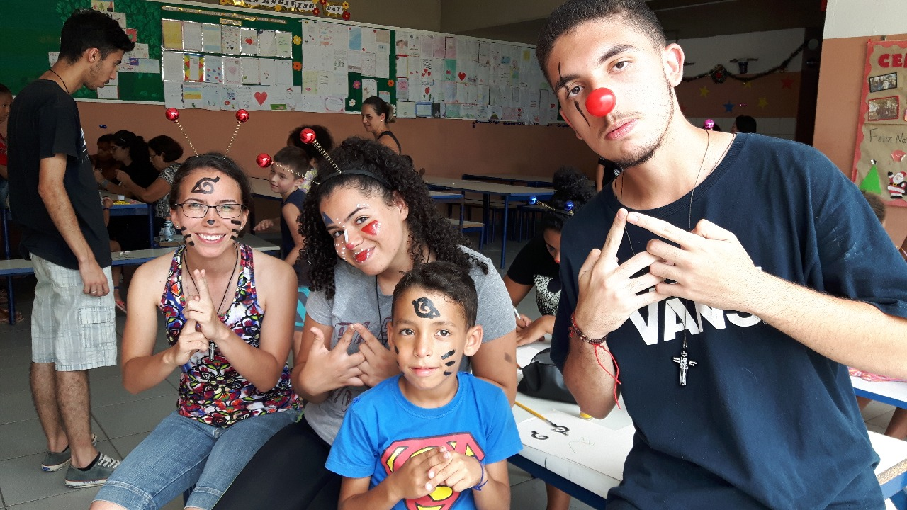
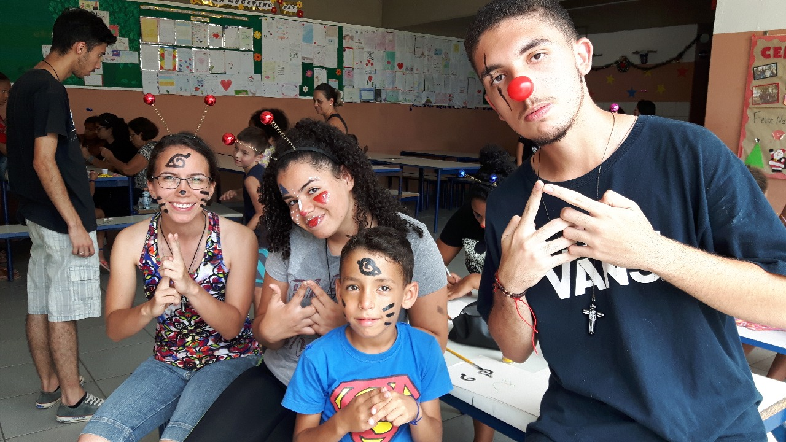

Vida Pessoal e Hobbies
Família
Moro com a minha mãe, Sônia. Sou filha mais nova e tenho uma irmã mais velha, Adriana, e dois sobrinhos, João Victor e Giovana. Os dois melhores presentes que já ganhei na vida.
Hobbies
Gosto muito de praticar esportes. Sempre joguei desde criança, tudo qualquer tipo de atividade como futsal, vôlei, basquete, entre outros. Participava das atividades esportivas da escola, até cheguei a participar de alguns campeonatos a niveis regionais e estaduais.
Também gosto muito de música. Eu toco alguns instrumentos como violão e piano. Mas geralmente só toco em missas.

Outras atividades
Participava de algumas atividades religiosas, como grupo de oração, o qual eu já fui coordenadora por dois anos e foi um tempo gigantesco de aprendizado, além de me proporcionar experiências incríveis e diversas como ir na Fundação Casa de Jacareí-SP, ir para São João da Boa Vista-SP, entre outras.
Também já participei do GAM (Grupo de Ação Missionária). Durante o período de férias, em Janeiro, íamos para alguma comunidade e lá passávamos uma semana desenvolvendo atividades sociais e religiosas, principalmente com crianças. O objetivo era integrar e reanimar as pessoas daquela lugar.
Em 2017 fomos à comunidade do bairro Espírito Santo, na cidade de Paraibuna-SP
Em 2018 fomos à comunidade do bairro Cidade Nova Jacareí, na cidade de Jacareí-SP
Em 2019 fomos à comunidade do bairro Galo Branco, na cidade de São José dos Campos-SP
 
